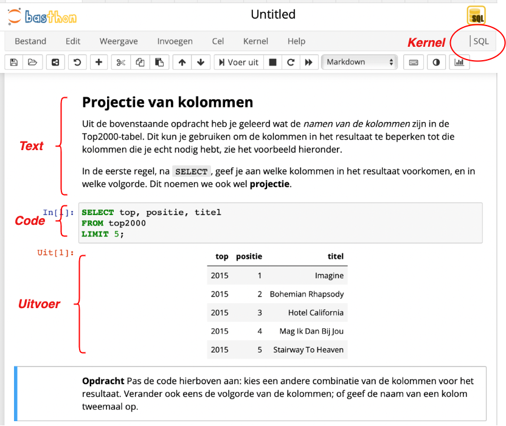
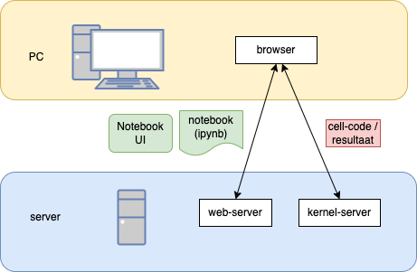
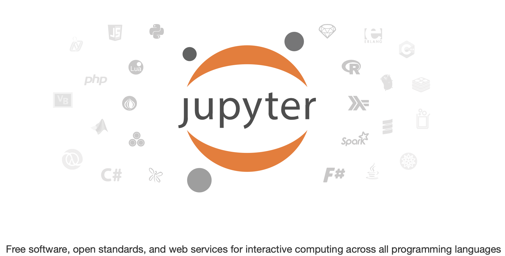
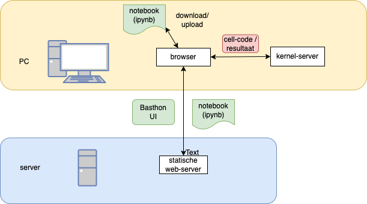

Presentatie 1#
Inhoud#
Wat is Jupyter?
Jupyter voor informatica-onderwijs
Zelf aan de slag (Basthon)
Jupyter achtergrond#
oorspronkelijk: iPython notebook
combineert opgemaakte tekst (-cellen)
met uitvoerbare Python code (-cellen)
en bijbehorende data
voor Data Science: onderzoek en publicatie
kleine(re) stap van onderzoek naar publicatie
lezer kan resultaten reproduceren…
…en eventueel zelf experimeteren
Notebook#

iPython architectuur#

Van iPython naar Jupyter#

Van iPython naar Jupyter#
meerdere kernels:
Python, R, …., JavaScript (en P5JS), SQL, OCaml, Elm,
meerdere User Interfaces
Jupyter Notebook, Jupyter Lab, …
andere software (en standaarden, enz.)
Jupyter Book (executable books)
MyST-JS
Jupyter voor informatica-onderwijs#
combinatie van opgemaakte tekst (met figuren, formules, enz.)
met uitvoerbare en aanpasbare code => scaffolding van code
extensies o.a. Python Tutor
Jupyter Book
verzameling notebooks en MarkDown bestanden
met structuur, navigatie en zoeken
extensie: exercises (opdrachten en uitwerkingen)
extensie: assessment (multiple choice vragen enz.)
open source!
Interactieve presentaties#
Onderstaande alleen in Jupyter Lab (niet in Basthon)
%LOAD data/top2000.db
Voorbeeld: databases#
Voer de onderstaande code uit door Shift-Enter in de code-cel
SELECT *
FROM top2000
LIMIT 5;
| top | positie | titel | artiest | jaar |
|---|---|---|---|---|
| 2015 | 1 | Imagine | John Lennon | 1971 |
| 2015 | 2 | Bohemian Rhapsody | Queen | 1975 |
| 2015 | 3 | Hotel California | Eagles | 1977 |
| 2015 | 4 | Mag Ik Dan Bij Jou | Claudia De Breij | 2011 |
| 2015 | 5 | Stairway To Heaven | Led Zeppelin | 1971 |
Basthon - “kernel in de browser”#

Basthon DB voorbeeld#
Ga zelf aan de slag met:
Voer de code-cellen uit, pas deze aan, voer uit, enz.
Opdrachten: van volledig uitgewerkt tot volledig uit te werken
Basthon in Franse onderwijs#
5,000 scholen
100% van de Franse openbare scholen
210,000+ actieve gebruikers
1,100,000+ activiteiten
80,000 notebooks/week
1 server: Intel Xeon 2 CPU E5-2620 v3 @ 2.40GHz 2 cores + 15GB RAM
100,000 pyodide/week (Python in de browser)
(Bron: CaPytale presentatie - dec. 2022, Jupyter Lite workshop)
Voordelen Basthon#
Basthon: “zandbak” voor Python (en andere kernels)
geen server nodig (alleen statische website)
privacy (geen tracking)
veilig - voor computer en voor server/data
zandbak in de browser: veilig voor computer
data in zandbak: veilig voor server-data
veilig experimenteren met code en data
Basthon: meer voorbeelden#
Databases:
Python:
Basthon: andere voorbeelden#
Python tutor - https://notebook.basthon.fr/?from=examples/python3-pythontutor.ipynb
turtle grahics (voor fractals) - https://notebook.basthon.fr/?from=examples/python3-decorateurs.ipynb
vrije val van een bal (Python) - https://notebook.basthon.fr/?from=examples/python3-chute-libre.ipynb
binaire bomen (Python) - https://notebook.basthon.fr/?from=examples/python3-binarytree.ipynb
visualisatie van datastructuren - https://notebook.basthon.fr/?from=examples/python3-lolviz.ipynb
Basthon: notebook aanpassen#
pas tekst aan
edit: MarkDown notatie
run: formatteren
cellen toevoegen en verwijderen; cel-type aanpassen
volgorde veranderen; split, merge; copy, paste
notebook: download, upload
kiezen van een andere kernel
Huiswerk#
bedenk toepassingen voor Basthon-notebooks
maak een Basthon notebook
Basthon: notebook publiceren#
volgende bijeenkomst